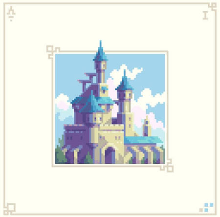

BİLGELİK · CESARET · MERAK
İçindeki büyüyü
uyandır.
Sıradan dünyayı geride bırak. Binlerce yıllık sırlar, yeni bir dönemin başlangıcında seni bekliyor.
Akademiyi keşfet DÖNEM 2026 · KAYITLAR AÇIK
✧
✦
✧
✦
ARCANUM
EST. 1092
EST. 1092
51° 30′ 26″ N
HIDDEN IN PLAIN SIGHT
HIDDEN IN PLAIN SIGHT
DÖRT YOL · TEK AKADEMİ
Bilginin kapıları.
İlgi alanını seç, kendi büyü yolculuğuna başla.

AKADEMİNİN KALBİ01 / KEŞFETAna KampüsUçuş dersleri, kadim salonlar ve büyük buluşmalar.DERSLERİ KEŞFET 01 YENİ DERS02 / SAVUNMAKaranlık SanatlarEn güçlü büyü, kendini korumayı bilmektir.DERSİ KEŞFET 02
YENİ DERS02 / SAVUNMAKaranlık SanatlarEn güçlü büyü, kendini korumayı bilmektir.DERSİ KEŞFET 02
 İLERİ SEVİYE03 / SAHA DERSİYaratık BakımıEjderhalara fısıldayan öğrenciler aranıyor.DERSİ KEŞFET 03
İLERİ SEVİYE03 / SAHA DERSİYaratık BakımıEjderhalara fısıldayan öğrenciler aranıyor.DERSİ KEŞFET 03
 04 / LABORATUVARİksir YapımıŞişelenmiş şöhret, kaynatılmış ihtişam.DERSİ KEŞFET 04
04 / LABORATUVARİksir YapımıŞişelenmiş şöhret, kaynatılmış ihtişam.DERSİ KEŞFET 04
ESKİ BİLGELİK · YENİ BİR GELECEK
Büyü, merakla başlar.
Arcanum'da her ders yeni bir kapı, her öğrenci kendi hikâyesinin kahramanıdır. Sana uygun yolu bul ve ilk adımını at.
Akademi hakkında ↗YENİ DÖNEM BAŞLIYOR
Kendi hikâyeni yaz.
Akademi başvuru formu · Demo
Bu demo formu bilgileri sunucuya göndermez.